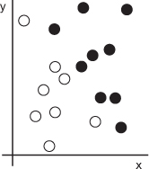
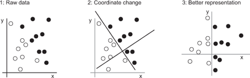
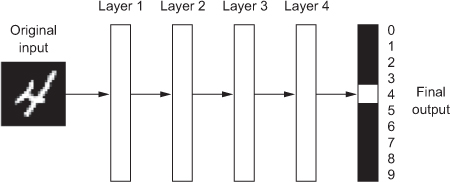
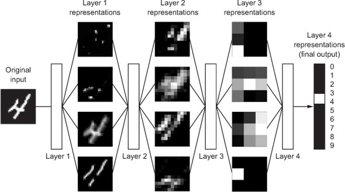
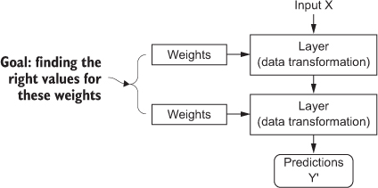
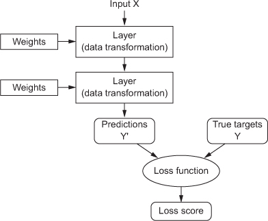
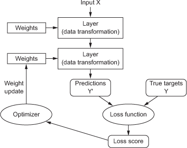
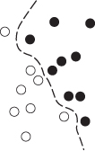
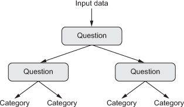

In the past few years, artificial intelligence (AI) has been a subject of intense media hype. Machine learning, deep learning, and AI come up in countless articles, often outside of technology-minded publications. We’re promised a future of intelligent chatbots, self-driving cars, and virtual assistants—a future sometimes painted in a grim light and other times as utopian, where human jobs will be scarce and most economic activity will be handled by robots or AI agents. For a future or current practitioner of machine learning, it’s important to be able to recognize the signal in the noise so that you can tell world-changing developments from overhyped press releases. Our future is at stake, and it’s a future in which you have an active role to play: after reading this book, you’ll be one of those who develop the AI agents. So let’s tackle these questions: What has deep learning achieved so far? How significant is it? Where are we headed next? Should you believe the hype?
This chapter provides essential context around artificial intelligence, machine learning, and deep learning.
First, we need to define clearly what we’re talking about when we mention AI. What are artificial intelligence, machine learning, and deep learning (see figure 1.1)? How do they relate to each other?
Figure 1.1. Artificial intelligence, machine learning, and deep learning
Artificial intelligence was born in the 1950s, when a handful of pioneers from the nascent field of computer science started asking whether computers could be made to “think”—a question whose ramifications we’re still exploring today. A concise definition of the field would be as follows: the effort to automate intellectual tasks normally performed by humans. As such, AI is a general field that encompasses machine learning and deep learning, but that also includes many more approaches that don’t involve any learning. Early chess programs, for instance, only involved hardcoded rules crafted by programmers, and didn’t qualify as machine learning. For a fairly long time, many experts believed that human-level artificial intelligence could be achieved by having programmers handcraft a sufficiently large set of explicit rules for manipulating knowledge. This approach is known as symbolic AI, and it was the dominant paradigm in AI from the 1950s to the late 1980s. It reached its peak popularity during the expert systems boom of the 1980s.
Although symbolic AI proved suitable to solve well-defined, logical problems, such as playing chess, it turned out to be intractable to figure out explicit rules for solving more complex, fuzzy problems, such as image classification, speech recognition, and language translation. A new approach arose to take symbolic AI’s place: machine learning.
In Victorian England, Lady Ada Lovelace was a friend and collaborator of Charles Babbage, the inventor of the Analytical Engine: the first-known general-purpose, mechanical computer. Although visionary and far ahead of its time, the Analytical Engine wasn’t meant as a general-purpose computer when it was designed in the 1830s and 1840s, because the concept of general-purpose computation was yet to be invented. It was merely meant as a way to use mechanical operations to automate certain computations from the field of mathematical analysis—hence, the name Analytical Engine. In 1843, Ada Lovelace remarked on the invention, “The Analytical Engine has no pretensions whatever to originate anything. It can do whatever we know how to order it to perform.... Its province is to assist us in making available what we’re already acquainted with.”
This remark was later quoted by AI pioneer Alan Turing as “Lady Lovelace’s objection” in his landmark 1950 paper “Computing Machinery and Intelligence,”[1] which introduced the Turing test as well as key concepts that would come to shape AI. Turing was quoting Ada Lovelace while pondering whether general-purpose computers could be capable of learning and originality, and he came to the conclusion that they could.
A. M. Turing, “Computing Machinery and Intelligence,” Mind 59, no. 236 (1950): 433-460.
Machine learning arises from this question: could a computer go beyond “what we know how to order it to perform” and learn on its own how to perform a specified task? Could a computer surprise us? Rather than programmers crafting data-processing rules by hand, could a computer automatically learn these rules by looking at data?
This question opens the door to a new programming paradigm. In classical programming, the paradigm of symbolic AI, humans input rules (a program) and data to be processed according to these rules, and out come answers (see figure 1.2). With machine learning, humans input data as well as the answers expected from the data, and out come the rules. These rules can then be applied to new data to produce original answers.
Figure 1.2. Machine learning: a new programming paradigm

A machine-learning system is trained rather than explicitly programmed. It’s presented with many examples relevant to a task, and it finds statistical structure in these examples that eventually allows the system to come up with rules for automating the task. For instance, if you wished to automate the task of tagging your vacation pictures, you could present a machine-learning system with many examples of pictures already tagged by humans, and the system would learn statistical rules for associating specific pictures to specific tags.
Although machine learning only started to flourish in the 1990s, it has quickly become the most popular and most successful subfield of AI, a trend driven by the availability of faster hardware and larger datasets. Machine learning is tightly related to mathematical statistics, but it differs from statistics in several important ways. Unlike statistics, machine learning tends to deal with large, complex datasets (such as a dataset of millions of images, each consisting of tens of thousands of pixels) for which classical statistical analysis such as Bayesian analysis would be impractical. As a result, machine learning, and especially deep learning, exhibits comparatively little mathematical theory—maybe too little—and is engineering oriented. It’s a hands-on discipline in which ideas are proven empirically more often than theoretically.
To define deep learning and understand the difference between deep learning and other machine-learning approaches, first we need some idea of what machine--learning algorithms do. I just stated that machine learning discovers rules to execute a data-processing task, given examples of what’s expected. So, to do machine learning, we need three things:
A machine-learning model transforms its input data into meaningful outputs, a process that is “learned” from exposure to known examples of inputs and outputs. Therefore, the central problem in machine learning and deep learning is to meaningfully transform data: in other words, to learn useful representations of the input data at hand—representations that get us closer to the expected output. Before we go any further: what’s a representation? At its core, it’s a different way to look at data—to represent or encode data. For instance, a color image can be encoded in the RGB format (red-green-blue) or in the HSV format (hue-saturation-value): these are two different representations of the same data. Some tasks that may be difficult with one representation can become easy with another. For example, the task “select all red pixels in the image” is simpler in the RGB format, whereas “make the image less saturated” is simpler in the HSV format. Machine-learning models are all about finding appropriate representations for their input data—transformations of the data that make it more amenable to the task at hand, such as a classification task.
Let’s make this concrete. Consider an x-axis, a y-axis, and some points represented by their coordinates in the (x, y) system, as shown in figure 1.3.

As you can see, we have a few white points and a few black points. Let’s say we want to develop an algorithm that can take the coordinates (x, y) of a point and output whether that point is likely to be black or to be white. In this case,
What we need here is a new representation of our data that cleanly separates the white points from the black points. One transformation we could use, among many other possibilities, would be a coordinate change, illustrated in figure 1.4.

In this new coordinate system, the coordinates of our points can be said to be a new representation of our data. And it’s a good one! With this representation, the black/white classification problem can be expressed as a simple rule: “Black points are such that x > 0,” or “White points are such that x < 0.” This new representation basically solves the classification problem.
In this case, we defined the coordinate change by hand. But if instead we tried systematically searching for different possible coordinate changes, and used as feedback the percentage of points being correctly classified, then we would be doing machine learning. Learning, in the context of machine learning, describes an automatic search process for better representations.
All machine-learning algorithms consist of automatically finding such transformations that turn data into more-useful representations for a given task. These operations can be coordinate changes, as you just saw, or linear projections (which may destroy information), translations, nonlinear operations (such as “select all points such that x > 0”), and so on. Machine-learning algorithms aren’t usually creative in finding these transformations; they’re merely searching through a predefined set of operations, called a hypothesis space.
So that’s what machine learning is, technically: searching for useful representations of some input data, within a predefined space of possibilities, using guidance from a feedback signal. This simple idea allows for solving a remarkably broad range of intellectual tasks, from speech recognition to autonomous car driving.
Now that you understand what we mean by learning, let’s take a look at what makes deep learning special.
Deep learning is a specific subfield of machine learning: a new take on learning representations from data that puts an emphasis on learning successive layers of increasingly meaningful representations. The deep in deep learning isn’t a reference to any kind of deeper understanding achieved by the approach; rather, it stands for this idea of successive layers of representations. How many layers contribute to a model of the data is called the depth of the model. Other appropriate names for the field could have been layered representations learning and hierarchical representations learning. Modern deep learning often involves tens or even hundreds of successive layers of representations—and they’re all learned automatically from exposure to training data. Meanwhile, other approaches to machine learning tend to focus on learning only one or two layers of representations of the data; hence, they’re sometimes called shallow learning.
In deep learning, these layered representations are (almost always) learned via models called neural networks, structured in literal layers stacked on top of each other. The term neural network is a reference to neurobiology, but although some of the central concepts in deep learning were developed in part by drawing inspiration from our understanding of the brain, deep-learning models are not models of the brain. There’s no evidence that the brain implements anything like the learning mechanisms used in modern deep-learning models. You may come across pop-science articles proclaiming that deep learning works like the brain or was modeled after the brain, but that isn’t the case. It would be confusing and counterproductive for newcomers to the field to think of deep learning as being in any way related to neurobiology; you don’t need that shroud of “just like our minds” mystique and mystery, and you may as well forget anything you may have read about hypothetical links between deep learning and biology. For our purposes, deep learning is a mathematical framework for learning representations from data.
What do the representations learned by a deep-learning algorithm look like? Let’s examine how a network several layers deep (see figure 1.5) transforms an image of a digit in order to recognize what digit it is.
Figure 1.5. A deep neural network for digit classification

As you can see in figure 1.6, the network transforms the digit image into representations that are increasingly different from the original image and increasingly informative about the final result. You can think of a deep network as a multistage information-distillation operation, where information goes through successive filters and comes out increasingly purified (that is, useful with regard to some task).
Figure 1.6. Deep representations learned by a digit-classification model

So that’s what deep learning is, technically: a multistage way to learn data representations. It’s a simple idea—but, as it turns out, very simple mechanisms, sufficiently scaled, can end up looking like magic.
At this point, you know that machine learning is about mapping inputs (such as images) to targets (such as the label “cat”), which is done by observing many examples of input and targets. You also know that deep neural networks do this input-to-target mapping via a deep sequence of simple data transformations (layers) and that these data transformations are learned by exposure to examples. Now let’s look at how this learning happens, concretely.
The specification of what a layer does to its input data is stored in the layer’s weights, which in essence are a bunch of numbers. In technical terms, we’d say that the transformation implemented by a layer is parameterized by its weights (see figure 1.7). (Weights are also sometimes called the parameters of a layer.) In this context, learning means finding a set of values for the weights of all layers in a network, such that the network will correctly map example inputs to their associated targets. But here’s the thing: a deep neural network can contain tens of millions of parameters. Finding the correct value for all of them may seem like a daunting task, especially given that modifying the value of one parameter will affect the behavior of all the others!
Figure 1.7. A neural network is parameterized by its weights.

To control something, first you need to be able to observe it. To control the output of a neural network, you need to be able to measure how far this output is from what you expected. This is the job of the loss function of the network, also called the objective function. The loss function takes the predictions of the network and the true target (what you wanted the network to output) and computes a distance score, capturing how well the network has done on this specific example (see figure 1.8).
Figure 1.8. A loss function measures the quality of the network’s output.

The fundamental trick in deep learning is to use this score as a feedback signal to adjust the value of the weights a little, in a direction that will lower the loss score for the current example (see figure 1.9). This adjustment is the job of the optimizer, which implements what’s called the Backpropagation algorithm: the central algorithm in deep learning. The next chapter explains in more detail how backpropagation works.
Figure 1.9. The loss score is used as a feedback signal to adjust the weights.

Initially, the weights of the network are assigned random values, so the network merely implements a series of random transformations. Naturally, its output is far from what it should ideally be, and the loss score is accordingly very high. But with every example the network processes, the weights are adjusted a little in the correct direction, and the loss score decreases. This is the training loop, which, repeated a sufficient number of times (typically tens of iterations over thousands of examples), yields weight values that minimize the loss function. A network with a minimal loss is one for which the outputs are as close as they can be to the targets: a trained network. Once again, it’s a simple mechanism that, once scaled, ends up looking like magic.
Although deep learning is a fairly old subfield of machine learning, it only rose to prominence in the early 2010s. In the few years since, it has achieved nothing short of a revolution in the field, with remarkable results on perceptual problems such as seeing and hearing—problems involving skills that seem natural and intuitive to humans but have long been elusive for machines.
In particular, deep learning has achieved the following breakthroughs, all in historically difficult areas of machine learning:
We’re still exploring the full extent of what deep learning can do. We’ve started applying it to a wide variety of problems outside of machine perception and natural--language understanding, such as formal reasoning. If successful, this may herald an age where deep learning assists humans in science, software development, and more.
Although deep learning has led to remarkable achievements in recent years, expectations for what the field will be able to achieve in the next decade tend to run much higher than what will likely be possible. Although some world-changing applications like autonomous cars are already within reach, many more are likely to remain elusive for a long time, such as believable dialogue systems, human-level machine translation across arbitrary languages, and human-level natural-language understanding. In particular, talk of human-level general intelligence shouldn’t be taken too seriously. The risk with high expectations for the short term is that, as technology fails to deliver, research investment will dry up, slowing progress for a long time.
This has happened before. Twice in the past, AI went through a cycle of intense optimism followed by disappointment and skepticism, with a dearth of funding as a result. It started with symbolic AI in the 1960s. In those early days, projections about AI were flying high. One of the best-known pioneers and proponents of the symbolic AI approach was Marvin Minsky, who claimed in 1967, “Within a generation ... the problem of creating ‘artificial intelligence’ will substantially be solved.” Three years later, in 1970, he made a more precisely quantified prediction: “In from three to eight years we will have a machine with the general intelligence of an average human being.” In 2016, such an achievement still appears to be far in the future—so far that we have no way to predict how long it will take—but in the 1960s and early 1970s, several experts believed it to be right around the corner (as do many people today). A few years later, as these high expectations failed to materialize, researchers and government funds turned away from the field, marking the start of the first AI winter (a reference to a nuclear winter, because this was shortly after the height of the Cold War).
It wouldn’t be the last one. In the 1980s, a new take on symbolic AI, expert systems, started gathering steam among large companies. A few initial success stories triggered a wave of investment, with corporations around the world starting their own in-house AI departments to develop expert systems. Around 1985, companies were spending over $1 billion each year on the technology; but by the early 1990s, these systems had proven expensive to maintain, difficult to scale, and limited in scope, and interest died down. Thus began the second AI winter.
We may be currently witnessing the third cycle of AI hype and disappointment—and we’re still in the phase of intense optimism. It’s best to moderate our expectations for the short term and make sure people less familiar with the technical side of the field have a clear idea of what deep learning can and can’t deliver.
Although we may have unrealistic short-term expectations for AI, the long-term picture is looking bright. We’re only getting started in applying deep learning to many important problems for which it could prove transformative, from medical diagnoses to digital assistants. AI research has been moving forward amazingly quickly in the past five years, in large part due to a level of funding never before seen in the short history of AI, but so far relatively little of this progress has made its way into the products and processes that form our world. Most of the research findings of deep learning aren’t yet applied, or at least not applied to the full range of problems they can solve across all industries. Your doctor doesn’t yet use AI, and neither does your accountant. You probably don’t use AI technologies in your day-to-day life. Of course, you can ask your smartphone simple questions and get reasonable answers, you can get fairly useful product recommendations on Amazon.com, and you can search for “birthday” on Google Photos and instantly find those pictures of your daughter’s birthday party from last month. That’s a far cry from where such technologies used to stand. But such tools are still only accessories to our daily lives. AI has yet to transition to being central to the way we work, think, and live.
Right now, it may seem hard to believe that AI could have a large impact on our world, because it isn’t yet widely deployed—much as, back in 1995, it would have been difficult to believe in the future impact of the internet. Back then, most people didn’t see how the internet was relevant to them and how it was going to change their lives. The same is true for deep learning and AI today. But make no mistake: AI is coming. In a not-so-distant future, AI will be your assistant, even your friend; it will answer your questions, help educate your kids, and watch over your health. It will deliver your groceries to your door and drive you from point A to point B. It will be your interface to an increasingly complex and information-intensive world. And, even more important, AI will help humanity as a whole move forward, by assisting human scientists in new breakthrough discoveries across all scientific fields, from genomics to mathematics.
On the way, we may face a few setbacks and maybe a new AI winter—in much the same way the internet industry was overhyped in 1998–1999 and suffered from a crash that dried up investment throughout the early 2000s. But we’ll get there eventually. AI will end up being applied to nearly every process that makes up our society and our daily lives, much like the internet is today.
Don’t believe the short-term hype, but do believe in the long-term vision. It may take a while for AI to be deployed to its true potential—a potential the full extent of which no one has yet dared to dream—but AI is coming, and it will transform our world in a fantastic way.
Deep learning has reached a level of public attention and industry investment never before seen in the history of AI, but it isn’t the first successful form of machine learning. It’s safe to say that most of the machine-learning algorithms used in the industry today aren’t deep-learning algorithms. Deep learning isn’t always the right tool for the job—sometimes there isn’t enough data for deep learning to be applicable, and sometimes the problem is better solved by a different algorithm. If deep learning is your first contact with machine learning, then you may find yourself in a situation where all you have is the deep-learning hammer, and every machine-learning problem starts to look like a nail. The only way not to fall into this trap is to be familiar with other approaches and practice them when appropriate.
A detailed discussion of classical machine-learning approaches is outside of the scope of this book, but we’ll briefly go over them and describe the historical context in which they were developed. This will allow us to place deep learning in the broader context of machine learning and better understand where deep learning comes from and why it matters.
Probabilistic modeling is the application of the principles of statistics to data analysis. It was one of the earliest forms of machine learning, and it’s still widely used to this day. One of the best-known algorithms in this category is the Naive Bayes algorithm.
Naive Bayes is a type of machine-learning classifier based on applying Bayes’ theorem while assuming that the features in the input data are all independent (a strong, or “naive” assumption, which is where the name comes from). This form of data analy-sis predates computers and was applied by hand decades before its first computer implementation (most likely dating back to the 1950s). Bayes’ theorem and the foundations of statistics date back to the eighteenth century, and these are all you need to start using Naive Bayes classifiers.
A closely related model is the logistic regression (logreg for short), which is sometimes considered to be the “hello world” of modern machine learning. Don’t be misled by its name—logreg is a classification algorithm rather than a regression algorithm. Much like Naive Bayes, logreg predates computing by a long time, yet it’s still useful to this day, thanks to its simple and versatile nature. It’s often the first thing a data scientist will try on a dataset to get a feel for the classification task at hand.
Early iterations of neural networks have been completely supplanted by the modern variants covered in these pages, but it’s helpful to be aware of how deep learning originated. Although the core ideas of neural networks were investigated in toy forms as early as the 1950s, the approach took decades to get started. For a long time, the missing piece was an efficient way to train large neural networks. This changed in the mid-1980s, when multiple people independently rediscovered the Backpropagation algorithm—a way to train chains of parametric operations using gradient-descent optimization (later in the book, we’ll precisely define these concepts)—and started applying it to neural networks.
The first successful practical application of neural nets came in 1989 from Bell Labs, when Yann LeCun combined the earlier ideas of convolutional neural networks and backpropagation, and applied them to the problem of classifying handwritten digits. The resulting network, dubbed LeNet, was used by the United States Postal Service in the 1990s to automate the reading of ZIP codes on mail envelopes.
As neural networks started to gain some respect among researchers in the 1990s, thanks to this first success, a new approach to machine learning rose to fame and quickly sent neural nets back to oblivion: kernel methods. Kernel methods are a group of classification algorithms, the best known of which is the support vector machine (SVM). The modern formulation of an SVM was developed by Vladimir Vapnik and Corinna Cortes in the early 1990s at Bell Labs and published in 1995,[2] although an older linear formulation was published by Vapnik and Alexey Chervonenkis as early as 1963.[3]
Vladimir Vapnik and Corinna Cortes, “Support-Vector Networks,” Machine Learning 20, no. 3 (1995): 273–297.
Vladimir Vapnik and Alexey Chervonenkis, “A Note on One Class of Perceptrons,” Automation and Remote Control 25 (1964).
SVMs aim at solving classification problems by finding good decision boundaries (see figure 1.10) between two sets of points belonging to two different categories. A decision boundary can be thought of as a line or surface separating your training data into two spaces corresponding to two categories. To classify new data points, you just need to check which side of the decision boundary they fall on.
Figure 1.10. A decision boundary

SVMs proceed to find these boundaries in two steps:
The technique of mapping data to a high-dimensional representation where a classification problem becomes simpler may look good on paper, but in practice it’s often computationally intractable. That’s where the kernel trick comes in (the key idea that kernel methods are named after). Here’s the gist of it: to find good decision hyperplanes in the new representation space, you don’t have to explicitly compute the coordinates of your points in the new space; you just need to compute the distance between pairs of points in that space, which can be done efficiently using a kernel function. A kernel function is a computationally tractable operation that maps any two points in your initial space to the distance between these points in your target representation space, completely bypassing the explicit computation of the new representation. Kernel functions are typically crafted by hand rather than learned from data—in the case of an SVM, only the separation hyperplane is learned.
At the time they were developed, SVMs exhibited state-of-the-art performance on simple classification problems and were one of the few machine-learning methods backed by extensive theory and amenable to serious mathematical analysis, making them well understood and easily interpretable. Because of these useful properties, SVMs became extremely popular in the field for a long time.
But SVMs proved hard to scale to large datasets and didn’t provide good results for perceptual problems such as image classification. Because an SVM is a shallow method, applying an SVM to perceptual problems requires first extracting useful representations manually (a step called feature engineering), which is difficult and brittle.
Decision trees are flowchart-like structures that let you classify input data points or predict output values given inputs (see figure 1.11). They’re easy to visualize and interpret. Decisions trees learned from data began to receive significant research interest in the 2000s, and by 2010 they were often preferred to kernel methods.
Figure 1.11. A decision tree: the parameters that are learned are the questions about the data. A question could be, for instance, “Is coefficient 2 in the data greater than 3.5?”

In particular, the Random Forest algorithm introduced a robust, practical take on decision-tree learning that involves building a large number of specialized decision trees and then ensembling their outputs. Random forests are applicable to a wide range of problems—you could say that they’re almost always the second-best algorithm for any shallow machine-learning task. When the popular machine-learning competition website Kaggle (http://kaggle.com) got started in 2010, random forests quickly became a favorite on the platform—until 2014, when gradient boosting machines took over. A gradient boosting machine, much like a random forest, is a machine-learning technique based on ensembling weak prediction models, generally decision trees. It uses gradient boosting, a way to improve any machine-learning model by iteratively training new models that specialize in addressing the weak points of the previous models. Applied to decision trees, the use of the gradient boosting technique results in models that strictly outperform random forests most of the time, while having similar properties. It may be one of the best, if not the best, algorithm for dealing with nonperceptual data today. Alongside deep learning, it’s one of the most commonly used techniques in Kaggle competitions.
Around 2010, although neural networks were almost completely shunned by the scientific community at large, a number of people still working on neural networks started to make important breakthroughs: the groups of Geoffrey Hinton at the University of Toronto, Yoshua Bengio at the University of Montreal, Yann LeCun at New York University, and IDSIA in Switzerland.
In 2011, Dan Ciresan from IDSIA began to win academic image-classification competitions with GPU-trained deep neural networks—the first practical success of modern deep learning. But the watershed moment came in 2012, with the entry of Hinton’s group in the yearly large-scale image-classification challenge ImageNet. The ImageNet challenge was notoriously difficult at the time, consisting of classifying high-resolution color images into 1,000 different categories after training on 1.4 million images. In 2011, the top-five accuracy of the winning model, based on classical approaches to computer vision, was only 74.3%. Then, in 2012, a team led by Alex Krizhevsky and advised by Geoffrey Hinton was able to achieve a top-five accuracy of 83.6%—a significant breakthrough. The competition has been dominated by deep convolutional neural networks every year since. By 2015, the winner reached an accuracy of 96.4%, and the classification task on ImageNet was considered to be a completely solved problem.
Since 2012, deep convolutional neural networks (convnets) have become the go-to algorithm for all computer vision tasks; more generally, they work on all perceptual tasks. At major computer vision conferences in 2015 and 2016, it was nearly impossible to find presentations that didn’t involve convnets in some form. At the same time, deep learning has also found applications in many other types of problems, such as natural-language processing. It has completely replaced SVMs and decision trees in a wide range of applications. For instance, for several years, the European Organization for Nuclear Research, CERN, used decision tree–based methods for analysis of particle data from the ATLAS detector at the Large Hadron Collider (LHC); but CERN eventually switched to Keras-based deep neural networks due to their higher performance and ease of training on large datasets.
The primary reason deep learning took off so quickly is that it offered better performance on many problems. But that’s not the only reason. Deep learning also makes problem-solving much easier, because it completely automates what used to be the most crucial step in a machine-learning workflow: feature engineering.
Previous machine-learning techniques—shallow learning—only involved transforming the input data into one or two successive representation spaces, usually via simple transformations such as high-dimensional non-linear projections (SVMs) or decision trees. But the refined representations required by complex problems generally can’t be attained by such techniques. As such, humans had to go to great lengths to make the initial input data more amenable to processing by these methods: they had to manually engineer good layers of representations for their data. This is called feature engineering. Deep learning, on the other hand, completely automates this step: with deep learning, you learn all features in one pass rather than having to engineer them yourself. This has greatly simplified machine-learning workflows, often replacing sophisticated multistage pipelines with a single, simple, end-to-end deep-learning model.
You may ask, if the crux of the issue is to have multiple successive layers of representations, could shallow methods be applied repeatedly to emulate the effects of deep learning? In practice, there are fast-diminishing returns to successive applications of shallow-learning methods, because the optimal first representation layer in a three-layer model isn’t the optimal first layer in a one-layer or two-layer model. What is transformative about deep learning is that it allows a model to learn all layers of representation jointly, at the same time, rather than in succession (greedily, as it’s called). With joint feature learning, whenever the model adjusts one of its internal features, all other features that depend on it automatically adapt to the change, without requiring human intervention. Everything is supervised by a single feedback signal: every change in the model serves the end goal. This is much more powerful than greedily stacking shallow models, because it allows for complex, abstract representations to be learned by breaking them down into long series of intermediate spaces (layers); each space is only a simple transformation away from the previous one.
These are the two essential characteristics of how deep learning learns from data: the incremental, layer-by-layer way in which increasingly complex representations are developed, and the fact that these intermediate incremental representations are learned jointly, each layer being updated to follow both the representational needs of the layer above and the needs of the layer below. Together, these two properties have made deep learning vastly more successful than previous approaches to machine learning.
A great way to get a sense of the current landscape of machine-learning algorithms and tools is to look at machine-learning competitions on Kaggle. Due to its highly competitive environment (some contests have thousands of entrants and million--dollar prizes) and to the wide variety of machine-learning problems covered, Kaggle offers a realistic way to assess what works and what doesn’t. So, what kind of algorithm is reliably winning competitions? What tools do top entrants use?
In 2016 and 2017, Kaggle was dominated by two approaches: gradient boosting machines and deep learning. Specifically, gradient boosting is used for problems where structured data is available, whereas deep learning is used for perceptual problems such as image classification. Practitioners of the former almost always use the excellent XGBoost library, which offers support for the two most popular languages of data science: Python and R. Meanwhile, most of the Kaggle entrants using deep learning use the Keras library, due to its ease of use, flexibility, and support of Python.
These are the two techniques you should be the most familiar with in order to be successful in applied machine learning today: gradient boosting machines, for shallow-learning problems; and deep learning, for perceptual problems. In technical terms, this means you’ll need to be familiar with XGBoost and Keras—the two libraries that currently dominate Kaggle competitions. With this book in hand, you’re already one big step closer.
The two key ideas of deep learning for computer vision—convolutional neural networks and backpropagation—were already well understood in 1989. The Long Short-Term Memory (LSTM) algorithm, which is fundamental to deep learning for timeseries, was developed in 1997 and has barely changed since. So why did deep learning only take off after 2012? What changed in these two decades?
In general, three technical forces are driving advances in machine learning:
Because the field is guided by experimental findings rather than by theory, algorithmic advances only become possible when appropriate data and hardware are available to try new ideas (or scale up old ideas, as is often the case). Machine learning isn’t mathematics or physics, where major advances can be done with a pen and a piece of paper. It’s an engineering science.
The real bottlenecks throughout the 1990s and 2000s were data and hardware. But here’s what happened during that time: the internet took off, and high-performance graphics chips were developed for the needs of the gaming market.
Between 1990 and 2010, off-the-shelf CPUs became faster by a factor of approximately 5,000. As a result, nowadays it’s possible to run small deep-learning models on your laptop, whereas this would have been intractable 25 years ago.
But typical deep-learning models used in computer vision or speech recognition require orders of magnitude more computational power than what your laptop can deliver. Throughout the 2000s, companies like NVIDIA and AMD have been investing billions of dollars in developing fast, massively parallel chips (graphical processing units [GPUs]) to power the graphics of increasingly photorealistic video games—cheap, single-purpose supercomputers designed to render complex 3D scenes on your screen in real time. This investment came to benefit the scientific community when, in 2007, NVIDIA launched CUDA (https://developer.nvidia.com/about-cuda), a programming interface for its line of GPUs. A small number of GPUs started replacing massive clusters of CPUs in various highly parallelizable applications, beginning with physics modeling. Deep neural networks, consisting mostly of many small matrix multiplications, are also highly parallelizable; and around 2011, some researchers began to write CUDA implementations of neural nets—Dan Ciresan[4] and Alex Krizhevsky[5] were among the first.
See “Flexible, High Performance Convolutional Neural Networks for Image Classification,” Proceedings of the 22nd International Joint Conference on Artificial Intelligence (2011), www.ijcai.org/Proceedings/11/Papers/210.pdf.
See “ImageNet Classification with Deep Convolutional Neural Networks,” Advances in Neural Information Processing Systems 25 (2012), http://mng.bz/2286.
What happened is that the gaming market subsidized supercomputing for the next generation of artificial intelligence applications. Sometimes, big things begin as games. Today, the NVIDIA TITAN X, a gaming GPU that cost $1,000 at the end of 2015, can deliver a peak of 6.6 TFLOPS in single precision: 6.6 trillion float32 operations per second. That’s about 350 times more than what you can get out of a modern laptop. On a TITAN X, it takes only a couple of days to train an ImageNet model of the sort that would have won the ILSVRC competition a few years ago. Meanwhile, large companies train deep-learning models on clusters of hundreds of GPUs of a type developed specifically for the needs of deep learning, such as the NVIDIA Tesla K80. The sheer computational power of such clusters is something that would never have been possible without modern GPUs.
What’s more, the deep-learning industry is starting to go beyond GPUs and is investing in increasingly specialized, efficient chips for deep learning. In 2016, at its annual I/O convention, Google revealed its tensor processing unit (TPU) project: a new chip design developed from the ground up to run deep neural networks, which is reportedly 10 times faster and far more energy efficient than top-of-the-line GPUs.
AI is sometimes heralded as the new industrial revolution. If deep learning is the steam engine of this revolution, then data is its coal: the raw material that powers our intelligent machines, without which nothing would be possible. When it comes to data, in addition to the exponential progress in storage hardware over the past 20 years (following Moore’s law), the game changer has been the rise of the internet, making it feasible to collect and distribute very large datasets for machine learning. Today, large companies work with image datasets, video datasets, and natural--language datasets that couldn’t have been collected without the internet. User-generated image tags on Flickr, for instance, have been a treasure trove of data for computer vision. So are YouTube videos. And Wikipedia is a key dataset for natural-language processing.
If there’s one dataset that has been a catalyst for the rise of deep learning, it’s the ImageNet dataset, consisting of 1.4 million images that have been hand annotated with 1,000 image categories (1 category per image). But what makes ImageNet special isn’t just its large size, but also the yearly competition associated with it.[6]
The ImageNet Large Scale Visual Recognition Challenge (ILSVRC), www.image-net.org/challenges/LSVRC.
As Kaggle has been demonstrating since 2010, public competitions are an excellent way to motivate researchers and engineers to push the envelope. Having common benchmarks that researchers compete to beat has greatly helped the recent rise of deep learning.
In addition to hardware and data, until the late 2000s, we were missing a reliable way to train very deep neural networks. As a result, neural networks were still fairly shallow, using only one or two layers of representations; thus, they weren’t able to shine against more-refined shallow methods such as SVMs and random forests. The key issue was that of gradient propagation through deep stacks of layers. The feedback signal used to train neural networks would fade away as the number of layers increased.
This changed around 2009–2010 with the advent of several simple but important algorithmic improvements that allowed for better gradient propagation:
Only when these improvements began to allow for training models with 10 or more layers did deep learning start to shine.
Finally, in 2014, 2015, and 2016, even more advanced ways to help gradient propagation were discovered, such as batch normalization, residual connections, and depthwise separable convolutions. Today we can train from scratch models that are thousands of layers deep.
As deep learning became the new state of the art for computer vision in 2012–2013, and eventually for all perceptual tasks, industry leaders took note. What followed was a gradual wave of industry investment far beyond anything previously seen in the history of AI.
In 2011, right before deep learning took the spotlight, the total venture capital investment in AI was around $19 million, which went almost entirely to practical applications of shallow machine-learning approaches. By 2014, it had risen to a staggering $394 million. Dozens of startups launched in these three years, trying to capitalize on the deep-learning hype. Meanwhile, large tech companies such as Google, Facebook, Baidu, and Microsoft have invested in internal research departments in amounts that would most likely dwarf the flow of venture-capital money. Only a few numbers have surfaced: In 2013, Google acquired the deep-learning startup DeepMind for a reported $500 million—the largest acquisition of an AI company in history. In 2014, Baidu started a deep-learning research center in Silicon Valley, investing $300 million in the project. The deep-learning hardware startup Nervana Systems was acquired by Intel in 2016 for over $400 million.
Machine learning—in particular, deep learning—has become central to the product strategy of these tech giants. In late 2015, Google CEO Sundar Pichai stated, “Machine learning is a core, transformative way by which we’re rethinking how we’re doing everything. We’re thoughtfully applying it across all our products, be it search, ads, YouTube, or Play. And we’re in early days, but you’ll see us—in a systematic way—apply machine learning in all these areas.”[7]
Sundar Pichai, Alphabet earnings call, Oct. 22, 2015.
As a result of this wave of investment, the number of people working on deep learning went in just five years from a few hundred to tens of thousands, and research progress has reached a frenetic pace. There are currently no signs that this trend will slow any time soon.
One of the key factors driving this inflow of new faces in deep learning has been the democratization of the toolsets used in the field. In the early days, doing deep learning required significant C++ and CUDA expertise, which few people possessed. Nowadays, basic Python scripting skills suffice to do advanced deep-learning research. This has been driven most notably by the development of Theano and then TensorFlow—two symbolic tensor-manipulation frameworks for Python that support autodifferentiation, greatly simplifying the implementation of new models—and by the rise of user-friendly libraries such as Keras, which makes deep learning as easy as manipulating LEGO bricks. After its release in early 2015, Keras quickly became the go-to deep-learning solution for large numbers of new startups, graduate students, and researchers pivoting into the field.
Is there anything special about deep neural networks that makes them the “right” approach for companies to be investing in and for researchers to flock to? Or is deep learning just a fad that may not last? Will we still be using deep neural networks in 20 years?
Deep learning has several properties that justify its status as an AI revolution, and it’s here to stay. We may not be using neural networks two decades from now, but whatever we use will directly inherit from modern deep learning and its core concepts. These important properties can be broadly sorted into three categories:
Deep learning has only been in the spotlight for a few years, and we haven’t yet established the full scope of what it can do. With every passing month, we learn about new use cases and engineering improvements that lift previous limitations. Following a scientific revolution, progress generally follows a sigmoid curve: it starts with a period of fast progress, which gradually stabilizes as researchers hit hard limitations, and then further improvements become incremental. Deep learning in 2017 seems to be in the first half of that sigmoid, with much more progress to come in the next few years.